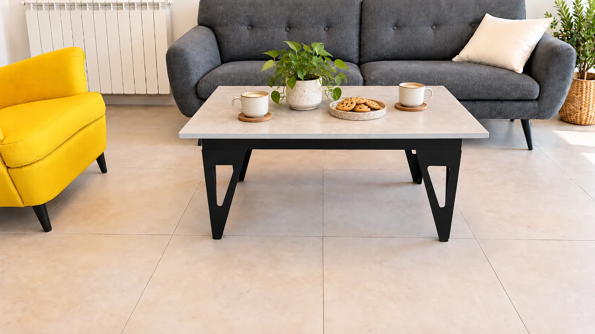

בחרו את הדגם שלכם

נבנה בפועל
שולחן קפה עם גאומטריה וחיבורים גלויים · צילום המוצר כפי שנבנה.
טרם נוספו צילומי מוצר
בתכנון · טרם נוספו צילומי מוצר
שולחן קפה עם פלטה חלקה, חיבורים היקפיים ורגליים המורכבות משני חלקים בזווית ישרה.